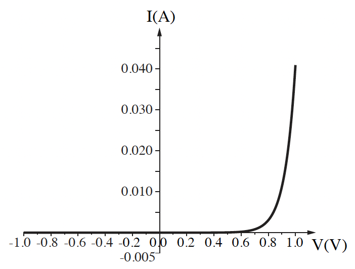

שאלה 2
תלמיד רצה למדוד את ההתנגדות של תיל מוליך (תיל א). נתונה טבלה המתארת את הזרם כפונקציה של המתח על התיל.
על פי הנתונים המוצגים בטבלה, סרטטו גרף המתאר את המתח כפונקציה של הזרם, וקבעו אם בתחום הנתונים בטבלה התיל מקיים את חוק אוהם. אם כן - חשבו את התנגדות התיל. אם לא - הסבירו מדוע. (9 נקודות)
בהנחה שאורך התיל 1m והחתך שלו הוא עיגול בקוטר 0.5mm, חשבו את ההתנגדות הסגולית ρ של החומר שממנו התיל עשוי. בטאו את ההתנגדות הסגולית ביחידות Ω x m (אוהם מטר). (7 נקודות)
| I(A) | V(V) |
|---|---|
| 0 | 0 |
| 0.19 | 1 |
| 0.39 | 2 |
| 0.57 | 3 |
| 0.79 | 4 |
| 0.96 | 5 |
לתלמיד תיל נוסף (תיל ב) העשוי מאותו חומר שממנו עשוי תיל א, וזהה באורכו לתיל א, אבל שטח החתך שלו גדול יותר.
קבעו אם ההתנגדות של תיל ב קטנה מהתנגדותו של תיל א, גדולה ממנה או שווה לה. הסבירו את תשובתכם.
הוסיפו במערכת הצירים של הגרף ששרטטתם בסעיף א גרף איכותי המתאים לתיל ב. (9.33 נקודות)
בתרשים שלפניכם מוצג גרף מקורב של הזרם כפונקציה של המתח (אופיין) של רכיב חשמלי הנקרא דיודה.
המתחים משתנים בתחום שבין -1V ל-1V.
לפניכם ארבעה היגדים (1)-(4). העתיקו למחברתכם את ההיגדים המתאימים לגרף המתואר, ונמקו את קביעותיכם.
(1) הזרם משתנה ביחס ישר למתח.
(2) הזרם קבוע בלי תלות במתח בין הדקי הדיודה.
(3) כדי שיזרום זרם בדיודה, חשוב לאיזה משני הדקי הדיודה מחובר הפוטנציאל הגבוה של מקור המתח.
(4) כאשר זורם זרם דרך הדיודה, ההתנגדות קטנה ככל שעולה המתח בין הדקי הדיודה.
(8 נקודות)
